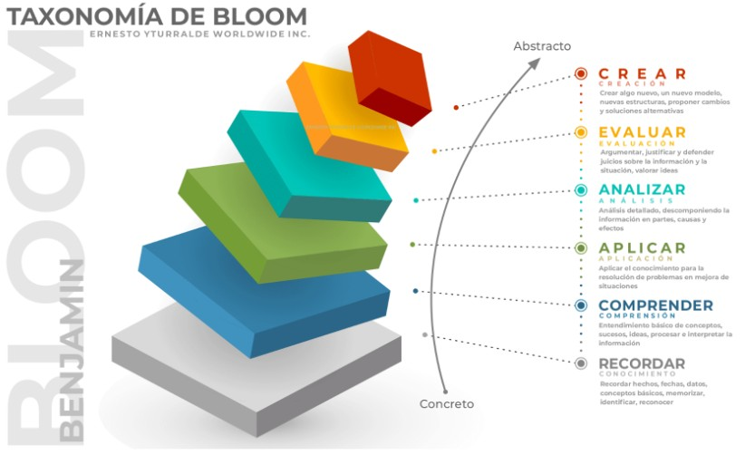
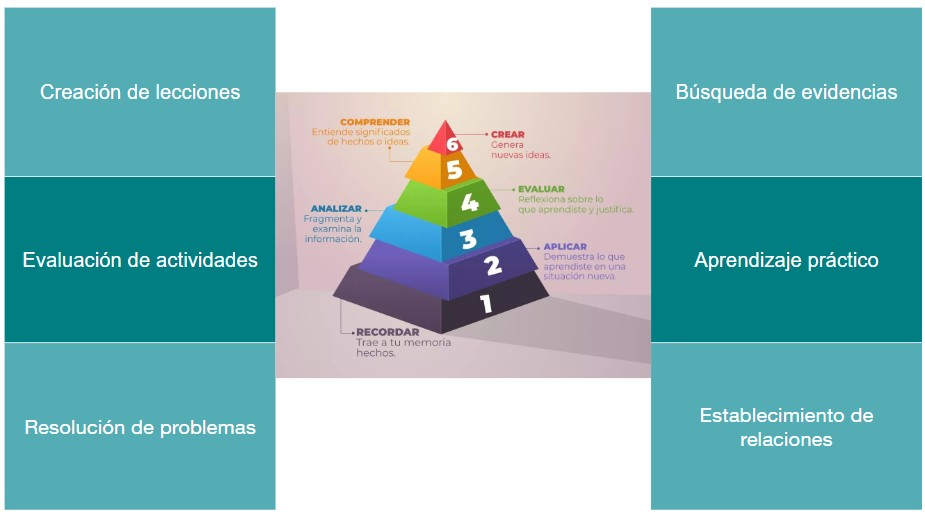

9 Principios de una buena capacitación
Instructora: Evelia Coss
9.1 Estructura
- Definiendo tu audiencia
- Planificación de cursos: objetivos y metas de aprendizaje, desarrollo de materiales didácticos adecuados.
- Impartición de la capacitación: involucrar y motivar a sus alumnos.
- Retroalimentación: cómo recopilar los comentarios, interpretarlos y utilizarlos para mejorar la práctica docente.
- Cierre y reflexión final
9.2 Definiendo tu audiencia
Público objetivo
Esto puede o no ser tu elección.
Cosas por tomar en cuenta:
Antecedentes generales
Punto de partida
Necesidades
Consideraciones especiales
Ej. Bioinformática básico
Cada equipo debe imaginar que diseñará un taller sobre un tema específico. Ejemplo:
- Introducción a R para biólogos
Describan lo siguiente:
- Título del curso
- ¿Quién es tu audiencia objetivo?
- ¿Qué habilidades necesitan desarrollar?
- ¿Qué puede motivar a la audiencia a tomar este taller?
Finalmente, expliquen su propuesta en 2 min.
9.3 🎯 ¿Qué es un objetivo de curso?
- Un objetivo de curso define lo que se espera que el participante logre al finalizar el curso completo. Es más general y abarca un conjunto de conocimientos, habilidades y actitudes.
📌 Características:
- Enfocado en resultados a mediano o largo plazo.
- Resume las metas generales del curso.
- Integra varias sesiones o módulos (plan de estudios)
Ejemplo: Los participantes serán capaces de diseñar, implementar y evaluar talleres de capacitación enfocados en públicos especificos utilizando metodologías participativas.
9.4 🎯 ¿Qué es un objetivo de sesión?
Un objetivo de sesión indica qué se espera que el participante logre al final de una clase o módulo específico. Es más concreto y enfocado.
9.4.1 📌 Características:
- Más específico, observable y medible.
- Relacionado directamente con los contenidos y actividades de la sesión.
- Se formula normalmente con un solo verbo por objetivo.
Ejemplo: Los participantes podrán identificar los elementos clave para definir la audiencia de un taller.
9.4.2 ¿Cómo formular ambos? 🛠️
Usa la fórmula básica:
[Quién] + [hará qué] + [en qué condiciones o con qué nivel de logro]
O bien sigue la estructura del enfoque SMART.
SMART: Se enfoca en redactar objetivos claros y efectivos, asegurando que sean específicos y medibles.
9.4.3 Los resultados de aprendizaje deberían ser SMART
- Specific - Específico
- Measurable - Medible
- Achievable - Alcanzable
- Realistic - Realista/Relevante
- Time-limited - Tiempo definido
9.5 ✅ S – Específico
Pregunta principal:
¿Qué exactamente quiero que los participantes logren?
Otras preguntas:
¿Qué habilidad, conocimiento o actitud deben adquirir?
¿A qué se refiere concretamente el objetivo?
¿Está claro quién es el público objetivo?
Ejemplo de pregunta: ¿Quiero que identifiquen conceptos clave, apliquen una técnica, o diseñen un producto?
9.6 ✅ M – Medible
Pregunta principal:
¿Cómo sabré que lo lograron?
Otras preguntas:
¿Qué evidencia mostrarán para demostrar que alcanzaron el objetivo?
¿Puedo observarlo, medirlo o evaluarlo?
Ejemplo de pregunta: ¿Cómo puedo comprobar que los participantes entendieron o aplicaron lo aprendido?
9.7 ✅ A – Alcanzable
Pregunta principal:
¿Es realista con el tiempo y recursos disponibles?
Otras preguntas:
- ¿Tienen los participantes los conocimientos previos necesarios?
- ¿Se puede lograr el objetivo en el tiempo de la sesión o del curso?
Ejemplo de pregunta: ¿Pueden los participantes lograr este objetivo con el nivel actual que tienen y en el tiempo disponible?
9.8 ✅ R – Relevante
Pregunta principal:
¿Está alineado con las necesidades de la audiencia y los objetivos generales del curso?
Otras preguntas:
- ¿Es útil o aplicable para el trabajo o contexto de los participantes?
- ¿Aporta valor al proceso de aprendizaje?
Ejemplo de pregunta: ¿Este objetivo contribuye a que los participantes logren un cambio significativo en su práctica o conocimiento?
9.9 ✅ T – Temporal
Pregunta prinicipal:
¿Cuándo se debe lograr?
Otras preguntas:
- ¿Se puede cumplir al final de la sesión, módulo o curso?
- ¿Está definido el plazo para alcanzar el objetivo?
Ejemplo de pregunta: ¿Este objetivo debe alcanzarse en esta sesión, en una semana, o al final del curso?
9.9.1 Pre-requisitos de un curso
- Conceptos teóricos (ej. biología básica, álgebra) Conocimientos técnicos (ej. uso de software, manejo de archivos)
- Habilidades generales (ej. saber programar, interpretar gráficos)
- Nivel requerido (básico, intermedio o avanzado)
- Definir si serán obligatorios o recomendados
9.9.2 Taxonomía de Bloom: Niveles de aprendizaje
La Taxonomía de Bloom es una herramienta fundamental en la educación que sirve para clasificar y estructurar los objetivos de aprendizaje según el nivel de complejidad cognitiva que implican. Fue desarrollada por Benjamin Bloom y colaboradores en 1956 y luego revisada en 2001 para adaptarse mejor a contextos modernos.

Aplicaciones

Verbos empleados

9.10 Plan de estudios
- No hay una forma establecida de hacer esto.
Para estructurar el contenido de un curso:
- Identifica los temas clave del curso.
- Define cuáles vas a cubrir y hasta qué profundidad.
- Considera si los participantes necesitan conocimientos previos.
- Equilibra teoría y práctica para favorecer el aprendizaje.
9.10.1 Estructura típica de una sesión de capacitación
Ejemplo: 1h de curso
| Estructura | Información | Tiempo |
Inicio (10-15%) |
|
10-15 min |
Desarrollo (70-80%) |
|
40-30 min |
Cierre (10-15%) |
|
10 - 15 min |
Ejemplo: https://eveliacoss.github.io/Tutorial_ISCB_LATAM_scATACseq/
9.10.2 Agrega los descansos
- Permite recuperar la atención y reducir la fatiga.
- Favorece la retención de información y mejora el desempeño cognitivo.
- También es útil para socializar o procesar lo aprendido.
Se recomiendan descansos de 5 a 10 minutos cada 60 a 90 minutos.
9.11 Formas de detectar dudas en tu audiencia
✋ Formas activas o participativas
- Levanten la mano los supervivientes en este punto.
- En una palabra, ¿cómo se sintieron con este tema? (pueden decir: “confundido”, “claro”, “interesante”…)
- Escriban en el chat (si es virtual) cualquier duda o comentario.
🧠 Formas reflexivas o indirectas
- ¿Qué se llevarían de esta parte si tuvieran que explicárselo a alguien más?
- Si tuvieran que resumir este tema en una frase, ¿cómo lo harían? (Esto revela si hay comprensión o dudas encubiertas).
9.12 Evaluación del aprendizaje adquirido
Propósito: Comprobar si los participantes alcanzaron los objetivos de la sesión o curso.
Cuándo hacerlo: Al final de la sesión o de cada bloque importante.
Cómo hacerlo:
- Preguntas orales o escritas.
- Miniquiz o ejercicios de aplicación.
- Actividad de repaso o mapa conceptual.
- Ronda de reflexión: “¿Qué aprendí hoy?”
Qué observar:
- Nivel de comprensión.
- Capacidad de aplicar lo aprendido.
- Dudas o conceptos que deben reforzarse.
9.13 Retroalimentación
❓ Tipos de preguntas para recopilar retroalimentación
🔹 Cerradas (rápidas y cuantificables)
- ¿La sesión cumplió tus expectativas? (Sí/No)
- ¿Te resultó clara la explicación de los temas? (Escala del 1 al 5)
- ¿Recomendarías esta sesión a otra persona? (Sí/No)
🔹 Abiertas (más detalladas y reflexivas)
- ¿Qué fue lo que más te gustó de esta sesión?
- ¿Qué parte te pareció menos útil o confusa?
- ¿Qué sugerencias tienes para mejorar este taller en el futuro?
- ¿Hubo algo que esperabas aprender y no se abordó?
Ejemplo: Planificación del curso de CABANANet